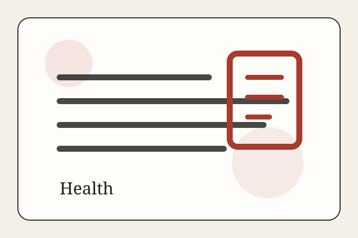

Health • Report
The Next Public-Health System Is the Room You Are In
Ventilation, filtration, humidity, CO2 monitoring, wildfire smoke, infectious aerosols, and heat are turning buildings into the front line of everyday public health.
Health Desk
Public health, vaccination, surveillance, and the line between fear and evidence.

Health • Report
Ventilation, filtration, humidity, CO2 monitoring, wildfire smoke, infectious aerosols, and heat are turning buildings into the front line of everyday public health.

Health • Report
H5N1 remains a low public-health risk for the general public, but it has already redrawn dairy surveillance, farm biosecurity, and the line between agricultural disease control and health preparedness.

Health • Report
The 2026 measles surge is a reminder that public health depends less on dramatic emergency language than on whether routine vaccination systems still hold.